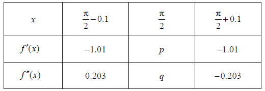
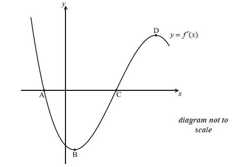
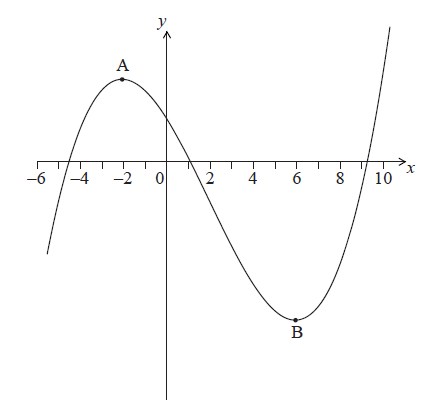
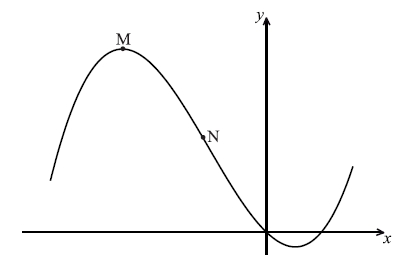
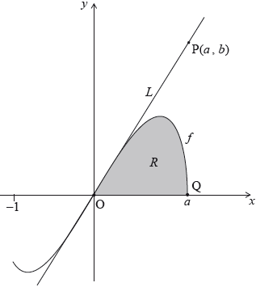
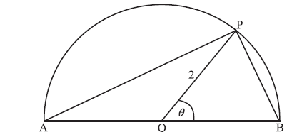
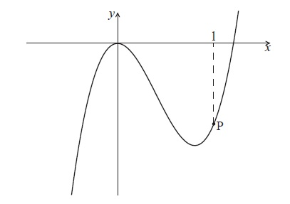
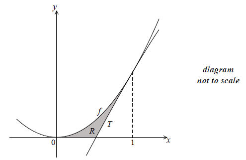
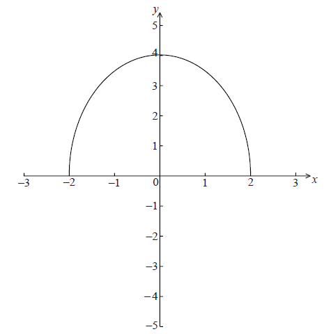

SL Paper 1
The following diagram shows the graph of \(f’\), the derivative of \(f\).

The graph of \(f’\) has a local minimum at A, a local maximum at B and passes through \((4,{\text{ }} - 2)\).
The point \({\text{P}}(4,{\text{ }}3)\) lies on the graph of the function, \(f\).
Write down the gradient of the curve of \(f\) at P.
Find the equation of the normal to the curve of \(f\) at P.
Determine the concavity of the graph of \(f\) when \(4 < x < 5\) and justify your answer.
The values of the functions \(f\) and \(g\) and their derivatives for \(x = 1\) and \(x = 8\) are shown in the following table.

Let \(h(x) = f(x)g(x)\).
Find \(h(1)\).
Find \(h'(8)\).
The following diagram shows part of the graph of a quadratic function f .

The x-intercepts are at \(( - 4{\text{, }}0)\) and \((6{\text{, }}0)\) , and the y-intercept is at \((0{\text{, }}240)\) .
Write down \(f(x)\) in the form \(f(x) = - 10(x - p)(x - q)\) .
Find another expression for \(f(x)\) in the form \(f(x) = - 10{(x - h)^2} + k\) .
Show that \(f(x)\) can also be written in the form \(f(x) = 240 + 20x - 10{x^2}\) .
A particle moves along a straight line so that its velocity, \(v{\text{ m}}{{\text{s}}^{ - 1}}\) , at time t seconds is given by \(v = 240 + 20t - 10{t^2}\) , for \(0 \le t \le 6\) .
(i) Find the value of t when the speed of the particle is greatest.
(ii) Find the acceleration of the particle when its speed is zero.
Let \(g(x) = 2x\sin x\) .
Find \(g'(x)\) .
Find the gradient of the graph of g at \(x = \pi \) .
Let \(f(x) = \frac{{ax}}{{{x^2} + 1}}\) , \( - 8 \le x \le 8\) , \(a \in \mathbb{R}\) .The graph of f is shown below.

The region between \(x = 3\) and \(x = 7\) is shaded.
Show that \(f( - x) = - f(x)\) .
Given that \(f''(x) = \frac{{2ax({x^2} - 3)}}{{{{({x^2} + 1)}^3}}}\) , find the coordinates of all points of inflexion.
It is given that \(\int {f(x){\rm{d}}x = \frac{a}{2}} \ln ({x^2} + 1) + C\) .
(i) Find the area of the shaded region, giving your answer in the form \(p\ln q\) .
(ii) Find the value of \(\int_4^8 {2f(x - 1){\rm{d}}x} \) .
Let \(f(x) = {x^2} - x\), for \(x \in \mathbb{R}\). The following diagram shows part of the graph of \(f\).

The graph of \(f\) crosses the \(x\)-axis at the origin and at the point \({\text{P}}(1,{\text{ }}0)\).
The line L is the normal to the graph of f at P.
The line \(L\) intersects the graph of \(f\) at another point Q, as shown in the following diagram.

Show that \(f’(1) = 1\).
Find the equation of \(L\) in the form \(y = ax + b\).
Find the \(x\)-coordinate of Q.
Find the area of the region enclosed by the graph of \(f\) and the line \(L\).
Let \(f(x) = \frac{{\cos x}}{{\sin x}}\) , for \(\sin x \ne 0\) .
In the following table, \(f'\left( {\frac{\pi }{2}} \right) = p\) and \(f''\left( {\frac{\pi }{2}} \right) = q\) . The table also gives approximate values of \(f'(x)\) and \(f''(x)\) near \(x = \frac{\pi }{2}\) .

Use the quotient rule to show that \(f'(x) = \frac{{ - 1}}{{{{\sin }^2}x}}\) .
Find \(f''(x)\) .
Find the value of p and of q.
Use information from the table to explain why there is a point of inflexion on the graph of f where \(x = \frac{\pi }{2}\) .
Consider \(f(x) = {x^2} + \frac{p}{x}\) , \(x \ne 0\) , where p is a constant.
Find \(f'(x)\) .
There is a minimum value of \(f(x)\) when \(x = - 2\) . Find the value of \(p\) .
The following diagram shows the graphs of the displacement, velocity and acceleration of a moving object as functions of time, t.

Complete the following table by noting which graph A, B or C corresponds to each function.

Write down the value of t when the velocity is greatest.
Let \(f(x) = \cos x + \sqrt 3 \sin x\) , \(0 \le x \le 2\pi \) . The following diagram shows the graph of \(f\) .

The \(y\)-intercept is at (\(0\), \(1\)) , there is a minimum point at A (\(p\), \(q\)) and a maximum point at B.
Find \(f'(x)\) .
Hence
(i) show that \(q = - 2\) ;
(ii) verify that A is a minimum point.
Find the maximum value of \(f(x)\) .
The function \(f(x)\) can be written in the form \(r\cos (x - a)\) .
Write down the value of r and of a .
Consider a function \(f\). The line L1 with equation \(y = 3x + 1\) is a tangent to the graph of \(f\) when \(x = 2\)
Let \(g\left( x \right) = f\left( {{x^2} + 1} \right)\) and P be the point on the graph of \(g\) where \(x = 1\).
Write down \(f'\left( 2 \right)\).
Find \(f\left( 2 \right)\).
Show that the graph of g has a gradient of 6 at P.
Let L2 be the tangent to the graph of g at P. L1 intersects L2 at the point Q.
Find the y-coordinate of Q.
The following diagram shows the graph of \(f(x) = a\sin (b(x - c)) + d\) , for \(2 \le x \le 10\) .

There is a maximum point at P(4, 12) and a minimum point at Q(8, −4) .
Use the graph to write down the value of
(i) a ;
(ii) c ;
(iii) d .
Show that \(b = \frac{\pi }{4}\) .
Find \(f'(x)\) .
At a point R, the gradient is \( - 2\pi \) . Find the x-coordinate of R.
Given that \(f(x) = \frac{1}{x}\) , answer the following.
Find the first four derivatives of \(f(x)\) .
Write an expression for \({f^{(n)}}(x)\) in terms of x and n .
Let \(f(x) = 6 + 6\sin x\) . Part of the graph of f is shown below.

The shaded region is enclosed by the curve of f , the x-axis, and the y-axis.
Solve for \(0 \le x < 2\pi \)
(i) \(6 + 6\sin x = 6\) ;
(ii) \(6 + 6\sin x = 0\) .
Write down the exact value of the x-intercept of f , for \(0 \le x < 2\pi \) .
The area of the shaded region is k . Find the value of k , giving your answer in terms of \(\pi \) .
Let \(g(x) = 6 + 6\sin \left( {x - \frac{\pi }{2}} \right)\) . The graph of f is transformed to the graph of g.
Give a full geometric description of this transformation.
Let \(g(x) = 6 + 6\sin \left( {x - \frac{\pi }{2}} \right)\) . The graph of f is transformed to the graph of g.
Given that \(\int_p^{p + \frac{{3\pi }}{2}} {g(x){\rm{d}}x} = k\) and \(0 \le p < 2\pi \) , write down the two values of p.
Let \(f(x) = {x^2}\). The following diagram shows part of the graph of \(f\).

The line \(L\) is the tangent to the graph of \(f\) at the point \({\text{A}}( - k,{\text{ }}{k^2})\), and intersects the \(x\)-axis at point B. The point C is \(( - k,{\text{ }}0)\).
The region \(R\) is enclosed by \(L\), the graph of \(f\), and the \(x\)-axis. This is shown in the following diagram.

Write down \(f'(x)\).
Find the gradient of \(L\).
Show that the \(x\)-coordinate of B is \( - \frac{k}{2}\).
Find the area of triangle ABC, giving your answer in terms of \(k\).
Given that the area of triangle ABC is \(p\) times the area of \(R\), find the value of \(p\).
Let \(f(x) = \sqrt {4x + 5} \), for \(x \geqslant - 1.25\).
Consider another function \(g\). Let R be a point on the graph of \(g\). The \(x\)-coordinate of R is 1. The equation of the tangent to the graph at R is \(y = 3x + 6\).
Find \(f'(1)\).
Write down \(g'(1)\).
Find \(g(1)\).
Let \(h(x) = f(x) \times g(x)\). Find the equation of the tangent to the graph of \(h\) at the point where \(x = 1\).
Let \(f(x) = \cos x\).
Let \(g(x) = {x^k}\), where \(k \in {\mathbb{Z}^ + }\).
Let \(k = 21\) and \(h(x) = \left( {{f^{(19)}}(x) \times {g^{(19)}}(x)} \right)\).
(i) Find the first four derivatives of \(f(x)\).
(ii) Find \({f^{(19)}}(x)\).
(i) Find the first three derivatives of \(g(x)\).
(ii) Given that \({g^{(19)}}(x) = \frac{{k!}}{{(k - p)!}}({x^{k - 19}})\), find \(p\).
(i) Find \(h'(x)\).
(ii) Hence, show that \(h'(\pi ) = \frac{{ - 21!}}{2}{\pi ^2}\).
The diagram shows part of the graph of \(y = f'(x)\) . The x-intercepts are at points A and C. There is a minimum at B, and a maximum at D.

(i) Write down the value of \(f'(x)\) at C.
(ii) Hence, show that C corresponds to a minimum on the graph of f , i.e. it has the same x-coordinate.
Which of the points A, B, D corresponds to a maximum on the graph of f ?
Show that B corresponds to a point of inflexion on the graph of f .
Let \(f(x) = {{\rm{e}}^{6x}}\) .
Write down \(f'(x)\) .
The tangent to the graph of f at the point \({\text{P}}(0{\text{, }}b)\) has gradient m .
(i) Show that \(m = 6\) .
(ii) Find b .
Hence, write down the equation of this tangent.
Consider the functions \(f(x)\) , \(g(x)\) and \(h(x)\) . The following table gives some values associated with these functions.

The following diagram shows parts of the graphs of \(h\) and \(h''\) .

There is a point of inflexion on the graph of \(h\) at P, when \(x = 3\) .
Given that \(h(x) = f(x) \times g(x)\) ,
Write down the value of \(g(3)\) , of \(f'(3)\) , and of \(h''(2)\) .
Explain why P is a point of inflexion.
find the \(y\)-coordinate of P.
find the equation of the normal to the graph of \(h\) at P.
Find \(\int {\frac{1}{{2x + 3}}} {\rm{d}}x\) .
Given that \(\int_0^3 {\frac{1}{{2x + 3}}} {\rm{d}}x = \ln \sqrt P \) , find the value of P.
The following diagram shows the graph of a quadratic function f , for \(0 \le x \le 4\) .

The graph passes through the point P(0, 13) , and its vertex is the point V(2, 1) .
The function can be written in the form \(f(x) = a{(x - h)^2} + k\) .
(i) Write down the value of h and of k .
(ii) Show that \(a = 3\) .
Find \(f(x)\) , giving your answer in the form \(A{x^2} + Bx + C\) .
Calculate the area enclosed by the graph of f , the x-axis, and the lines \(x = 2\) and \(x = 4\) .
In this question s represents displacement in metres and t represents time in seconds.
The velocity v m s–1 of a moving body is given by \(v = 40 - at\) where a is a non-zero constant.
Trains approaching a station start to slow down when they pass a point P. As a train slows down, its velocity is given by \(v = 40 - at\) , where \(t = 0\) at P. The station is 500 m from P.
(i) If \(s = 100\) when \(t = 0\) , find an expression for s in terms of a and t.
(ii) If \(s = 0\) when \(t = 0\) , write down an expression for s in terms of a and t.
A train M slows down so that it comes to a stop at the station.
(i) Find the time it takes train M to come to a stop, giving your answer in terms of a.
(ii) Hence show that \(a = \frac{8}{5}\) .
For a different train N, the value of a is 4.
Show that this train will stop before it reaches the station.
Find \(\int {x{{\text{e}}^{{x^2} - 1}}{\text{d}}x} \).
Find \(f(x)\), given that \(f’(x) = x{{\text{e}}^{{x^2} - 1}}\) and \(f( - 1) = 3\).
Let \(f(x) = k{x^4}\) . The point \({\text{P}}(1{\text{, }}k)\) lies on the curve of f . At P, the normal to the curve is parallel to \(y = - \frac{1}{8}x\) . Find the value of k.
The graph of the function \(y = f(x)\) passes through the point \(\left( {\frac{3}{2},4} \right)\) . The gradient function of f is given as \(f'(x) = \sin (2x - 3)\) . Find \(f(x)\) .
The following diagram shows part of the graph of \(y = f(x)\).

The graph has a local maximum at \(A\), where \(x = - 2\), and a local minimum at \(B\), where \(x = 6\).
On the following axes, sketch the graph of \(y = f'(x)\).
Write down the following in order from least to greatest: \(f(0),{\text{ }}f'(6),{\text{ }}f''( - 2)\).
Let \(y = f(x)\), for \( - 0.5 \le \) x \( \le \) \(6.5\). The following diagram shows the graph of \(f'\), the derivative of \(f\).

The graph of \(f'\) has a local maximum when \(x = 2\), a local minimum when \(x = 4\), and it crosses the \(x\)-axis at the point \((5,{\text{ }}0)\).
Explain why the graph of \(f\) has a local minimum when \(x = 5\).
Find the set of values of \(x\) for which the graph of \(f\) is concave down.
The following diagram shows the shaded regions \(A\), \(B\) and \(C\).

The regions are enclosed by the graph of \(f'\), the \(x\)-axis, the \(y\)-axis, and the line \(x = 6\).
The area of region \(A\) is 12, the area of region \(B\) is 6.75 and the area of region \(C\) is 6.75.
Given that \(f(0) = 14\), find \(f(6)\).
The following diagram shows the shaded regions \(A\), \(B\) and \(C\).
The regions are enclosed by the graph of \(f'\), the x-axis, the y-axis, and the line \(x = 6\).
The area of region \(A\) is 12, the area of region \(B\) is 6.75 and the area of region \(C\) is 6.75.
Let \(g(x) = {\left( {f(x)} \right)^2}\). Given that \(f'(6) = 16\), find the equation of the tangent to the graph of \(g\) at the point where \(x = 6\).
Let \(\int_1^5 {3f(x){\rm{d}}x = 12} \) .
Show that \(\int_5^1 {f(x){\rm{d}}x = - 4} \) .
Find the value of \(\int_1^2 {(x + f(x)){\rm{d}}x + } \int_2^5 {(x + f(x)){\rm{d}}x} \) .
A function \(f\) has its derivative given by \(f'(x) = 3{x^2} - 2kx - 9\), where \(k\) is a constant.
Find \(f''(x)\).
The graph of \(f\) has a point of inflexion when \(x = 1\).
Show that \(k = 3\).
Find \(f'( - 2)\).
Find the equation of the tangent to the curve of \(f\) at \(( - 2,{\text{ }}1)\), giving your answer in the form \(y = ax + b\).
Given that \(f'( - 1) = 0\), explain why the graph of \(f\) has a local maximum when \(x = - 1\).
Consider \(f(x) = {x^2}\sin x\) .
Find \(f'(x)\) .
Find the gradient of the curve of \(f\) at \(x = \frac{\pi }{2}\) .
Consider \(f(x) = \frac{1}{3}{x^3} + 2{x^2} - 5x\) . Part of the graph of f is shown below. There is a maximum point at M, and a point of inflexion at N.

Find \(f'(x)\) .
Find the x-coordinate of M.
Find the x-coordinate of N.
The line L is the tangent to the curve of f at \((3{\text{, }}12)\). Find the equation of L in the form \(y = ax + b\) .
Let \(f(x) = \frac{1}{4}{x^2} + 2\) . The line L is the tangent to the curve of f at (4, 6) .
Let \(g(x) = \frac{{90}}{{3x + 4}}\) , for \(2 \le x \le 12\) . The following diagram shows the graph of g .

Find the equation of L .
Find the area of the region enclosed by the curve of g , the x-axis, and the lines \(x = 2\) and \(x = 12\) . Give your answer in the form \(a\ln b\) , where \(a,b \in \mathbb{Z}\) .
The graph of g is reflected in the x-axis to give the graph of h . The area of the region enclosed by the lines L , \(x = 2\) , \(x = 12\) and the x-axis is 120 \(120{\text{ c}}{{\text{m}}^2}\) .
Find the area enclosed by the lines L , \(x = 2\) , \(x = 12\) and the graph of h .
Fred makes an open metal container in the shape of a cuboid, as shown in the following diagram.

The container has height \(x{\text{ m}}\), width \(x{\text{ m}}\) and length \(y{\text{ m}}\). The volume is \(36{\text{ }}{{\text{m}}^3}\).
Let \(A(x)\) be the outside surface area of the container.
Show that \(A(x) = \frac{{108}}{x} + 2{x^2}\).
Find \(A'(x)\).
Given that the outside surface area is a minimum, find the height of the container.
Fred paints the outside of the container. A tin of paint covers a surface area of \({\text{10 }}{{\text{m}}^{\text{2}}}\) and costs $20. Find the total cost of the tins needed to paint the container.
The following diagram shows the graph of \(f(x) = 2x\sqrt {{a^2} - {x^2}} \), for \( - 1 \leqslant x \leqslant a\), where \(a > 1\).

The line \(L\) is the tangent to the graph of \(f\) at the origin, O. The point \({\text{P}}(a,{\text{ }}b)\) lies on \(L\).
The point \({\text{Q}}(a,{\text{ }}0)\) lies on the graph of \(f\). Let \(R\) be the region enclosed by the graph of \(f\) and the \(x\)-axis. This information is shown in the following diagram.

Let \({A_R}\) be the area of the region \(R\).
(i) Given that \(f'(x) = \frac{{2{a^2} - 4{x^2}}}{{\sqrt {{a^2} - {x^2}} }}\), for \( - 1 \leqslant x < a\), find the equation of \(L\).
(ii) Hence or otherwise, find an expression for \(b\) in terms of \(a\).
Show that \({A_R} = \frac{2}{3}{a^3}\).
Let \({A_T}\) be the area of the triangle OPQ. Given that \({A_T} = k{A_R}\), find the value of \(k\).
Let \(f(x) = \frac{{2x}}{{{x^2} + 5}}\).
Use the quotient rule to show that \(f'(x) = \frac{{10 - 2{x^2}}}{{{{({x^2} + 5)}^2}}}\).
Find \(\int {\frac{{2x}}{{{x^2} + 5}}{\text{d}}x} \).
The following diagram shows part of the graph of \(f\).

The shaded region is enclosed by the graph of \(f\), the \(x\)-axis, and the lines \(x = \sqrt 5 \) and \(x = q\). This region has an area of \(\ln 7\). Find the value of \(q\).
Let \(\int_\pi ^a {\cos 2x{\text{d}}x} = \frac{1}{2}{\text{, where }}\pi < a < 2\pi \). Find the value of \(a\).
A rocket moving in a straight line has velocity \(v\) km s–1 and displacement \(s\) km at time \(t\) seconds. The velocity \(v\) is given by \(v(t) = 6{{\rm{e}}^{2t}} + t\) . When \(t = 0\) , \(s = 10\) .
Find an expression for the displacement of the rocket in terms of \(t\) .
The following diagram shows the graph of a function \(f\). There is a local minimum point at \(A\), where \(x > 0\).

The derivative of \(f\) is given by \(f'(x) = 3{x^2} - 8x - 3\).
Find the \(x\)-coordinate of \(A\).
The \(y\)-intercept of the graph is at (\(0,6\)). Find an expression for \(f(x)\).
The graph of a function \(g\) is obtained by reflecting the graph of \(f\) in the \(y\)-axis, followed by a translation of \(\left({\begin{array}{*{20}{c}}m\\n\end{array}}\right)\).
Find the \(x\)-coordinate of the local minimum point on the graph of \(g\).
Let \(f(x) = 1 + {{\text{e}}^{ - x}}\) and \(g(x) = 2x + b\), for \(x \in \mathbb{R}\), where \(b\) is a constant.
Find \((g \circ f)(x)\).
Given that \(\mathop {\lim }\limits_{x \to + \infty } (g \circ f)(x) = - 3\), find the value of \(b\).
Let \(f’(x) = \frac{{3{x^2}}}{{{{({x^3} + 1)}^5}}}\). Given that \(f(0) = 1\), find \(f(x)\).
A function f has its first derivative given by \(f'(x) = {(x - 3)^3}\) .
Find the second derivative.
Find \(f'(3)\) and \(f''(3)\) .
The point P on the graph of f has x-coordinate \(3\). Explain why P is not a point of inflexion.
Let \(f(x) = \frac{{6x}}{{x + 1}}\) , for \(x > 0\) .
Find \(f'(x)\) .
Let \(g(x) = \ln \left( {\frac{{6x}}{{x + 1}}} \right)\) , for \(x > 0\) .
Show that \(g'(x) = \frac{1}{{x(x + 1)}}\) .
Let \(h(x) = \frac{1}{{x(x + 1)}}\) . The area enclosed by the graph of h , the x-axis and the lines \(x = \frac{1}{5}\) and \(x = k\) is \(\ln 4\) . Given that \(k > \frac{1}{5}\) , find the value of k .
A toy car travels with velocity v ms−1 for six seconds. This is shown in the graph below.

The following diagram shows the graph of \(y = f(x)\), for \( - 4 \le x \le 5\).

Write down the car’s velocity at \(t = 3\) .
Write down the value of \(f( - 3)\);
Find the car’s acceleration at \(t = 1.5\) .
Find the total distance travelled.
Let \({L_x}\) be a family of lines with equation given by \(r\) \( = \left( {\begin{array}{*{20}{c}} x \\ {\frac{2}{x}} \end{array}} \right) + t\left( {\begin{array}{*{20}{c}} {{x^2}} \\ { - 2} \end{array}} \right)\), where \(x > 0\).
Write down the equation of \({L_1}\).
A line \({L_a}\) crosses the \(y\)-axis at a point \(P\).
Show that \(P\) has coordinates \(\left( {0,{\text{ }}\frac{4}{a}} \right)\).
The line \({L_a}\) crosses the \(x\)-axis at \({\text{Q}}(2a,{\text{ }}0)\). Let \(d = {\text{P}}{{\text{Q}}^2}\).
Show that \(d = 4{a^2} + \frac{{16}}{{{a^2}}}\).
There is a minimum value for \(d\). Find the value of \(a\) that gives this minimum value.
The following diagram shows a semicircle centre O, diameter [AB], with radius 2.
Let P be a point on the circumference, with \({\rm{P}}\widehat {\rm{O}}{\rm{B}} = \theta \) radians.

Let S be the total area of the two segments shaded in the diagram below.

Find the area of the triangle OPB, in terms of \(\theta \) .
Explain why the area of triangle OPA is the same as the area triangle OPB.
Show that \(S = 2(\pi - 2\sin \theta )\) .
Find the value of \(\theta \) when S is a local minimum, justifying that it is a minimum.
Find a value of \(\theta \) for which S has its greatest value.
Consider a function \(f(x)\) such that \(\int_1^6 {f(x){\text{d}}x = 8} \).
Find \(\int_1^6 {2f(x){\text{d}}x} \).
Find \(\int_1^6 {\left( {f(x) + 2} \right){\text{d}}x} \).
A rectangle is inscribed in a circle of radius 3 cm and centre O, as shown below.

The point P(x , y) is a vertex of the rectangle and also lies on the circle. The angle between (OP) and the x-axis is \(\theta \) radians, where \(0 \le \theta \le \frac{\pi }{2}\) .
Write down an expression in terms of \(\theta \) for
(i) \(x\) ;
(ii) \(y\) .
Let the area of the rectangle be A.
Show that \(A = 18\sin 2\theta \) .
(i) Find \(\frac{{{\rm{d}}A}}{{{\rm{d}}\theta }}\) .
(ii) Hence, find the exact value of \(\theta \) which maximizes the area of the rectangle.
(iii) Use the second derivative to justify that this value of \(\theta \) does give a maximum.
Let \(f(x) = \frac{{{{(\ln x)}^2}}}{2}\), for \(x > 0\).
Let \(g(x) = \frac{1}{x}\). The following diagram shows parts of the graphs of \(f'\) and g.

The graph of \(f'\) has an x-intercept at \(x = p\).
Show that \(f'(x) = \frac{{\ln x}}{x}\).
There is a minimum on the graph of \(f\). Find the \(x\)-coordinate of this minimum.
Write down the value of \(p\).
The graph of \(g\) intersects the graph of \(f'\) when \(x = q\).
Find the value of \(q\).
The graph of \(g\) intersects the graph of \(f'\) when \(x = q\).
Let \(R\) be the region enclosed by the graph of \(f'\), the graph of \(g\) and the line \(x = p\).
Show that the area of \(R\) is \(\frac{1}{2}\).
The following is the graph of a function \(f\) , for \(0 \le x \le 6\) .

The first part of the graph is a quarter circle of radius \(2\) with centre at the origin.
(a) Find \(\int_0^2 {f(x){\rm{d}}x} \) .
(b) The shaded region is enclosed by the graph of \(f\) , the \(x\)-axis, the \(y\)-axis and the line \(x = 6\) . The area of this region is \(3\pi \) .
Find \(\int_2^6 {f(x){\rm{d}}x} \) .
Find \(\int_0^2 {f(x){\rm{d}}x} \) .
The shaded region is enclosed by the graph of \(f\) , the \(x\)-axis, the \(y\)-axis and the line \(x = 6\) . The area of this region is \(3\pi \) .
Find \(\int_2^6 {f(x){\rm{d}}x} \) .
Consider \(f(x) = \ln ({x^4} + 1)\) .
The second derivative is given by \(f''(x) = \frac{{4{x^2}(3 - {x^4})}}{{{{({x^4} + 1)}^2}}}\) .
The equation \(f''(x) = 0\) has only three solutions, when \(x = 0\) , \( \pm \sqrt[4]{3}\) \(( \pm 1.316 \ldots )\) .
Find the value of \(f(0)\) .
Find the set of values of \(x\) for which \(f\) is increasing.
(i) Find \(f''(1)\) .
(ii) Hence, show that there is no point of inflexion on the graph of \(f\) at \(x = 0\) .
There is a point of inflexion on the graph of \(f\) at \(x = \sqrt[4]{3}\) \((x = 1.316 \ldots )\) .
Sketch the graph of \(f\) , for \(x \ge 0\) .
The acceleration, \(a{\text{ m}}{{\text{s}}^{ - 2}}\), of a particle at time t seconds is given by \(a = 2t + \cos t\) .
Find the acceleration of the particle at \(t = 0\) .
Find the velocity, v, at time t, given that the initial velocity of the particle is \({\text{m}}{{\text{s}}^{ - 1}}\) .
Find \(\int_0^3 {v{\rm{d}}t} \) , giving your answer in the form \(p - q\cos 3\) .
What information does the answer to part (c) give about the motion of the particle?
Let \(f:x \mapsto {\sin ^3}x\) .
(i) Write down the range of the function f .
(ii) Consider \(f(x) = 1\) , \(0 \le x \le 2\pi \) . Write down the number of solutions to this equation. Justify your answer.
Find \(f'(x)\) , giving your answer in the form \(a{\sin ^p}x{\cos ^q}x\) where \(a{\text{, }}p{\text{, }}q \in \mathbb{Z}\) .
Let \(g(x) = \sqrt 3 \sin x{(\cos x)^{\frac{1}{2}}}\) for \(0 \le x \le \frac{\pi }{2}\) . Find the volume generated when the curve of g is revolved through \(2\pi \) about the x-axis.
A function f is defined for \( - 4 \le x \le 3\) . The graph of f is given below.

The graph has a local maximum when \(x = 0\) , and local minima when \(x = - 3\) , \(x = 2\) .
Write down the x-intercepts of the graph of the derivative function, \(f'\) .
Write down all values of x for which \(f'(x)\) is positive.
At point D on the graph of f , the x-coordinate is \( - 0.5\). Explain why \(f''(x) < 0\) at D.
The graph of a function h passes through the point \(\left( {\frac{\pi }{{12}}, 5} \right)\).
Given that \(h'(x) = 4\cos 2x\), find \(h(x)\).
Let \(f(x) = {{\rm{e}}^{ - 3x}}\) and \(g(x) = \sin \left( {x - \frac{\pi }{3}} \right)\) .
Write down
(i) \(f'(x)\) ;
(ii) \(g'(x)\) .
Let \(h(x) = {{\rm{e}}^{ - 3x}}\sin \left( {x - \frac{\pi }{3}} \right)\) . Find the exact value of \(h'\left( {\frac{\pi }{3}} \right)\) .
The velocity v ms−1 of a particle at time t seconds, is given by \(v = 2t + \cos 2t\) , for \(0 \le t \le 2\) .
Write down the velocity of the particle when \(t = 0\) .
When \(t = k\) , the acceleration is zero.
(i) Show that \(k = \frac{\pi }{4}\) .
(ii) Find the exact velocity when \(t = \frac{\pi }{4}\) .
When \(t < \frac{\pi }{4}\) , \(\frac{{{\rm{d}}v}}{{{\rm{d}}t}} > 0\) and when \(t > \frac{\pi }{4}\) , \(\frac{{{\rm{d}}v}}{{{\rm{d}}t}} > 0\) .
Sketch a graph of v against t .
Let d be the distance travelled by the particle for \(0 \le t \le 1\) .
(i) Write down an expression for d .
(ii) Represent d on your sketch.
In this question, you are given that \(\cos \frac{\pi }{3} = \frac{1}{2}\) , and \(\sin \frac{\pi }{3} = \frac{{\sqrt 3 }}{2}\) .
The displacement of an object from a fixed point, O is given by \(s(t) = t - \sin 2t\) for \(0 \le t \le \pi \) .
Find \(s'(t)\) .
In this interval, there are only two values of t for which the object is not moving. One value is \(t = \frac{\pi }{6}\) .
Find the other value.
Show that \(s'(t) > 0\) between these two values of t .
Find the distance travelled between these two values of t .
The following diagram shows the graph of \(f(x) = \frac{x}{{{x^2} + 1}}\), for \(0 \le x \le 4\), and the line \(x = 4\).

Let \(R\) be the region enclosed by the graph of \(f\) , the \(x\)-axis and the line \(x = 4\).
Find the area of \(R\).
Let \(f(x) = \sqrt x \) . Line L is the normal to the graph of f at the point (4, 2) .
In the diagram below, the shaded region R is bounded by the x-axis, the graph of f and the line L .

Show that the equation of L is \(y = - 4x + 18\) .
Point A is the x-intercept of L . Find the x-coordinate of A.
Find an expression for the area of R .
The region R is rotated \(360^\circ \) about the x-axis. Find the volume of the solid formed, giving your answer in terms of \(\pi \) .
Let \(f(x) = {x^3}\). The following diagram shows part of the graph of f .

The point \({\rm{P}}(a,f(a))\) , where \(a > 0\) , lies on the graph of f . The tangent at P crosses the x-axis at the point \({\rm{Q}}\left( {\frac{2}{3},0} \right)\) . This tangent intersects the graph of f at the point R(−2, −8) .
The equation of the tangent at P is \(y = 3x - 2\) . Let T be the region enclosed by the graph of f , the tangent [PR] and the line \(x = k\) , between \(x = - 2\) and \(x = k\) where \( - 2 < k < 1\) . This is shown in the diagram below.

(i) Show that the gradient of [PQ] is \(\frac{{{a^3}}}{{a - \frac{2}{3}}}\) .
(ii) Find \(f'(a)\) .
(iii) Hence show that \(a = 1\) .
Given that the area of T is \(2k + 4\) , show that k satisfies the equation \({k^4} - 6{k^2} + 8 = 0\) .
A quadratic function \(f\) can be written in the form \(f(x) = a(x - p)(x - 3)\). The graph of \(f\) has axis of symmetry \(x = 2.5\) and \(y\)-intercept at \((0,{\text{ }} - 6)\)
Find the value of \(p\).
Find the value of \(a\).
The line \(y = kx - 5\) is a tangent to the curve of \(f\). Find the values of \(k\).
Part of the graph of \(f(x) = a{x^3} - 6{x^2}\) is shown below.

The point P lies on the graph of \(f\) . At P, x = 1.
Find \(f'(x)\) .
The graph of \(f\) has a gradient of \(3\) at the point P. Find the value of \(a\) .
Let \(f(x) = \cos x\), for \(0\) \(\le \) \(x\) \( \le \) \(2\pi \). The following diagram shows the graph of \(f\).
There are \(x\)-intercepts at \(x = \frac{\pi }{2},{\text{ }}\frac{{3\pi }}{2}\).

The shaded region \(R\) is enclosed by the graph of \(f\), the line \(x = b\), where \(b > \frac{{3\pi }}{2}\), and the \(x\)-axis. The area of \(R\) is \(\left( {1 - \frac{{\sqrt 3 }}{2}} \right)\). Find the value of \(b\).
Let \(f(x) = p{x^3} + p{x^2} + qx\).
Find \(f'(x)\).
Given that \(f'(x) \geqslant 0\), show that \({p^2} \leqslant 3pq\).
Let \(f(x) = 3 + \frac{{20}}{{{x^2} - 4}}\) , for \(x \ne \pm 2\) . The graph of f is given below.

The y-intercept is at the point A.
(i) Find the coordinates of A.
(ii) Show that \(f'(x) = 0\) at A.
The second derivative \(f''(x) = \frac{{40(3{x^2} + 4)}}{{{{({x^2} - 4)}^3}}}\) . Use this to
(i) justify that the graph of f has a local maximum at A;
(ii) explain why the graph of f does not have a point of inflexion.
Describe the behaviour of the graph of \(f\) for large \(|x|\) .
Write down the range of \(f\) .
Let \(f(x) = \frac{x}{{ - 2{x^2} + 5x - 2}}\) for \( - 2 \le x \le 4\) , \(x \ne \frac{1}{2}\) , \(x \ne 2\) . The graph of \(f\) is given below.

The graph of \(f\) has a local minimum at A(\(1\), \(1\)) and a local maximum at B.
Use the quotient rule to show that \(f'(x) = \frac{{2{x^2} - 2}}{{{{( - 2{x^2} + 5x - 2)}^2}}}\) .
Hence find the coordinates of B.
Given that the line \(y = k\) does not meet the graph of f , find the possible values of k .
Let \(f'(x) = 6{x^2} - 5\). Given that \(f(2) = - 3\), find \(f(x)\).
Consider \(f(x) = \log k(6x - 3{x^2})\), for \(0 < x < 2\), where \(k > 0\).
The equation \(f(x) = 2\) has exactly one solution. Find the value of \(k\).
Let \(f'(x) = 3{x^2} + 2\) . Given that \(f(2) = 5\) , find \(f(x)\) .
Let \(f(x) = \int {\frac{{12}}{{2x - 5}}} {\rm{d}}x\) , \(x > \frac{5}{2}\) . The graph of \(f\) passes through (\(4\), \(0\)) .
Find \(f(x)\) .
Let \(f'(x) = {\sin ^3}(2x)\cos (2x)\). Find \(f(x)\), given that \(f\left( {\frac{\pi }{4}} \right) = 1\).
A closed cylindrical can with radius r centimetres and height h centimetres has a volume of 20\(\pi \) cm3.
![]()
The material for the base and top of the can costs 10 cents per cm2 and the material for the curved side costs 8 cents per cm2. The total cost of the material, in cents, is C.
Express h in terms of r.
Show that \(C = 20\pi {r^2} + \frac{{320\pi }}{r}\).
Given that there is a minimum value for C, find this minimum value in terms of \(\pi \).
Find \(\int {\frac{{{{\rm{e}}^x}}}{{1 + {{\rm{e}}^x}}}} {\rm{d}}x\) .
Find \(\int {\sin 3x\cos 3x{\rm{d}}x} \) .
Find \(\int_4^{10} {(x - 4){\rm{d}}x} \) .
Part of the graph of \(f(x) = \sqrt {{x^{}} - 4} \) , for \(x \ge 4\) , is shown below. The shaded region R is enclosed by the graph of \(f\) , the line \(x = 10\) , and the x-axis.
![]()
The region R is rotated \({360^ \circ }\) about the x-axis. Find the volume of the solid formed.
A particle moves along a straight line so that its velocity, \(v{\text{ m}}{{\text{s}}^{ - 1}}\)at time t seconds is given by \(v = 6{{\rm{e}}^{3t}} + 4\) . When \(t = 0\) , the displacement, s, of the particle is 7 metres. Find an expression for s in terms of t.
Consider the function f with second derivative \(f''(x) = 3x - 1\) . The graph of f has a minimum point at A(2, 4) and a maximum point at \({\rm{B}}\left( { - \frac{4}{3},\frac{{358}}{{27}}} \right)\) .
Use the second derivative to justify that B is a maximum.
Given that \(f'(x) = \frac{3}{2}{x^2} - x + p\) , show that \(p = - 4\) .
Find \(f(x)\) .
Let \(f'(x) = \frac{{6 - 2x}}{{6x - {x^2}}}\), for \(0 < x < 6\).
The graph of \(f\) has a maximum point at P.
The \(y\)-coordinate of P is \(\ln 27\).
Find the \(x\)-coordinate of P.
Find \(f(x)\), expressing your answer as a single logarithm.
The graph of \(f\) is transformed by a vertical stretch with scale factor \(\frac{1}{{\ln 3}}\). The image of P under this transformation has coordinates \((a,{\text{ }}b)\).
Find the value of \(a\) and of \(b\), where \(a,{\text{ }}b \in \mathbb{N}\).
Let \(f(x) = {x^2}\).
Find \(\int_1^2 {{{\left( {f(x)} \right)}^2}{\text{d}}x} \).
The following diagram shows part of the graph of \(f\).

The shaded region \(R\) is enclosed by the graph of \(f\), the \(x\)-axis and the lines \(x = 1\) and \(x = 2\).
Find the volume of the solid formed when \(R\) is revolved \({360^ \circ }\) about the \(x\)-axis.
Given that \(\int_0^5 {\frac{2}{{2x + 5}}} {\rm{d}}x = \ln k\) , find the value of k .
Let \(f\left( x \right) = \frac{1}{{\sqrt {2x - 1} }}\), for \(x > \frac{1}{2}\).
Find \(\int {{{\left( {f\left( x \right)} \right)}^2}{\text{d}}x} \).
Part of the graph of f is shown in the following diagram.
![]()
The shaded region R is enclosed by the graph of f, the x-axis, and the lines x = 1 and x = 9 . Find the volume of the solid formed when R is revolved 360° about the x-axis.
Let \(f(x) = \frac{1}{2}{x^3} - {x^2} - 3x\) . Part of the graph of f is shown below.

There is a maximum point at A and a minimum point at B(3, − 9) .
Find the coordinates of A.
Write down the coordinates of
(i) the image of B after reflection in the y-axis;
(ii) the image of B after translation by the vector \(\left( {\begin{array}{*{20}{c}}
{ - 2}\\
5
\end{array}} \right)\) ;
(iii) the image of B after reflection in the x-axis followed by a horizontal stretch with scale factor \(\frac{1}{2}\) .
The graph of \(y = \sqrt x \) between \(x = 0\) and \(x = a\) is rotated \(360^\circ \) about the x-axis. The volume of the solid formed is \(32\pi \) . Find the value of a.
Let \(f\left( x \right) = 6{x^2} - 3x\). The graph of \(f\) is shown in the following diagram.
![]()
Find \(\int {\left( {6{x^2} - 3x} \right){\text{d}}x} \).
Find the area of the region enclosed by the graph of \(f\), the x-axis and the lines x = 1 and x = 2 .
The following table shows the probability distribution of a discrete random variable \(A\), in terms of an angle \(\theta \).

Show that \(\cos \theta = \frac{3}{4}\).
Given that \(\tan \theta > 0\), find \(\tan \theta \).
Let \(y = \frac{1}{{\cos x}}\), for \(0 < x < \frac{\pi }{2}\). The graph of \(y\)between \(x = \theta \) and \(x = \frac{\pi }{4}\) is rotated 360° about the \(x\)-axis. Find the volume of the solid formed.
The following diagram shows part of the graph of the function \(f(x) = 2{x^2}\) .

The line T is the tangent to the graph of f at \(x = 1\) .
Show that the equation of T is \(y = 4x - 2\) .
Find the x-intercept of T .
The shaded region R is enclosed by the graph of f , the line T , and the x-axis.
(i) Write down an expression for the area of R .
(ii) Find the area of R .
Let \(g(x) = \frac{{\ln x}}{{{x^2}}}\) , for \(x > 0\) .
Use the quotient rule to show that \(g'(x) = \frac{{1 - 2\ln x}}{{{x^3}}}\) .
The graph of g has a maximum point at A. Find the x-coordinate of A.
Consider f(x), g(x) and h(x), for x∈\(\mathbb{R}\) where h(x) = \(\left( {f \circ g} \right)\)(x).
Given that g(3) = 7 , g′ (3) = 4 and f ′ (7) = −5 , find the gradient of the normal to the curve of h at x = 3.
The graph of \(f(x) = \sqrt {16 - 4{x^2}} \) , for \( - 2 \le x \le 2\) , is shown below.

The region enclosed by the curve of f and the x-axis is rotated \(360^\circ \) about the x-axis.
Find the volume of the solid formed.
Let \(f(x) = {{\text{e}}^{2x}}\). The line \(L\) is the tangent to the curve of \(f\) at \((1,{\text{ }}{{\text{e}}^2})\).
Find the equation of \(L\) in the form \(y = ax + b\).
Let \(f(x) = {{\rm{e}}^x}\cos x\) . Find the gradient of the normal to the curve of f at \(x = \pi \) .
Let \(h(x) = \frac{{6x}}{{\cos x}}\) . Find \(h'(0)\) .
A function f (x) has derivative f ′(x) = 3x2 + 18x. The graph of f has an x-intercept at x = −1.
Find f (x).
The graph of f has a point of inflexion at x = p. Find p.
Find the values of x for which the graph of f is concave-down.
Let \(f(x) = \sin x + \frac{1}{2}{x^2} - 2x\) , for \(0 \le x \le \pi \) .
Let \(g\) be a quadratic function such that \(g(0) = 5\) . The line \(x = 2\) is the axis of symmetry of the graph of \(g\) .
The function \(g\) can be expressed in the form \(g(x) = a{(x - h)^2} + 3\) .
Find \(f'(x)\) .
Find \(g(4)\) .
(i) Write down the value of \(h\) .
(ii) Find the value of \(a\) .
Find the value of \(x\) for which the tangent to the graph of \(f\) is parallel to the tangent to the graph of \(g\) .